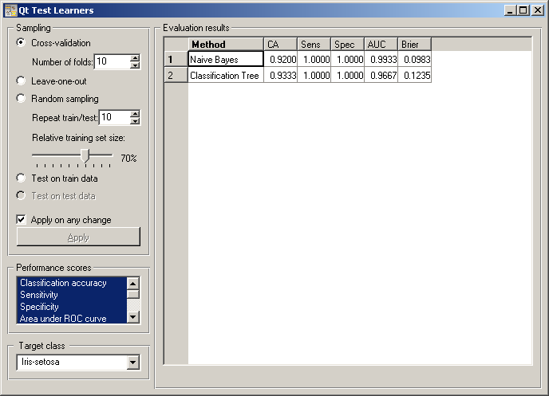
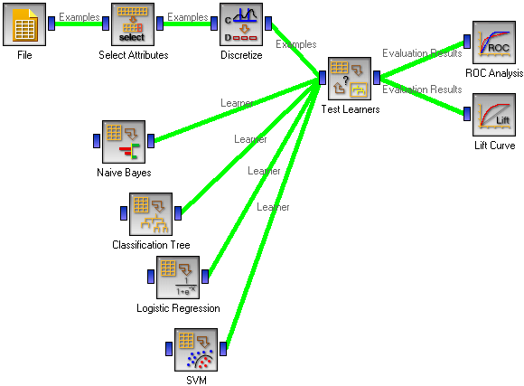

This is documentation for Orange 2.7. For the latest documentation, see Orange 3.
Test Learners¶
Tests learning algorithms on data.
Signals¶
- Inputs:
- Data (ExampleTable)
Data for training and, unless separate test data set is used, testing
- Separate Test Data (ExampleTable)
Separa data for testing
- Learner (orange.Learner)
One or more learning algorithms
- Outputs:
- Evaluation results (orngTest.ExperimentResults)
Results of testing the algorithms
Description¶
The widget tests learning algorithms on data. Different sampling schemes are available, including using a separate test data. The widget does two things. First, it shows a table with different performance measures of the classifiers, such as classification accuracy and area under ROC. Second, it outputs a signal with data which can be used by other widgets for analyzing the performance of classifiers, such as ROC Analysis or Confusion Matrix.
The signal Learner has a not very common property that it can be connected to more than one widget, which provide multiple learners to be tested with the same procedures. If the results of evaluation or fed into further widgets, such as the one for ROC analysis, the learning algorithms are analyzed together.
The widget supports various sampling methods. Cross-validation splits the data into the given number of folds (usually 5 or 10). The algorithm is tested by holding out the examples from one fold at a time; the model is induced from the other folds and the examples from the held out fold are classified. Leave-one-out is similar, but it holds out one example at a time, inducing the model from all others and then classifying the held out. This method is obviously very stable and reliable ... and very slow. Random sampling randomly splits the data onto the training and testing set in the given proportion (e.g. 70:30); the whole procedure is t repeated for the specified number of times. Test on train data uses the whole data set for training and then for testing. This method practically always gives overly optimistic results.
The above methods use the data from signal Data only. To give another data set with testing examples (for instance from another file or some data selected in another widget), we put it on the input signal Separate Test Data and select Test on test data.
Any changes in the above settings are applied immediately if Applied on any change is checked. If not, the user will have to press Apply to apply any changes.
The widget can compute a number of performance statistics.
- Classification accuracy is the proportion of correctly classified examples
- Sensitivity (also called true positive rate (TPR), hit rate and recall) is the number of detected positive examples among all positive examples, e.g. the proportion of sick people correctly diagnosed as sick
- Specificity is the proportion of detected negative examples among all negative examples, e.g. the proportion of healthy correctly recognized as healthy
- Area under ROC is the area under receiver-operating curve
- Information score is the average amount of information per classified instance, as defined by Kononenko and Bratko
- F-measure is a weighted harmonic mean of precision and recall (see below), 2*precision*recall/(precision+recall)
- Precision is the number of positive examples among all examples classified as positive, e.g. the number of sick among all diagnosed as sick, or a number of relevant documents among all retrieved documents
- Recall is the same measure as sensitivity, except that the latter term is more common in medicine and recall comes from text mining, where it means the proportion of relevant documents which are retrieved
- Brier score measure the accuracy of probability assessments, which measures the average deviation between the predicted probabilities of events and the actual events.
More comprehensive descriptions of measures can be found at http://en.wikipedia.org/wiki/Receiver_operating_characteristic (from classification accuracy to area under ROC), http://www.springerlink.com/content/j21p620rw33xw773/ (information score), http://en.wikipedia.org/wiki/F-measure#Performance_measures (from F-measure to recall) and http://en.wikipedia.org/wiki/Brier_score (Brier score).
Most measure require a target class, e.g. having the disease or being relevant. The target class can be selected at the bottom of the widget.
Example¶
In a typical use of the widget, we give it a data set and a few learning algorithms, and we observe their performance in the table inside the Test Learners widgets and in the ROC and Lift Curve widgets attached to the Test Learners. The data is often preprocessed before testing; in this case we discretized it and did some manual feature selection; not that this is done outside the cross-validation loop, so the testing results may be overly optimistic.
Another example of using this widget is given in the documentation for widget Confusion Matrix.